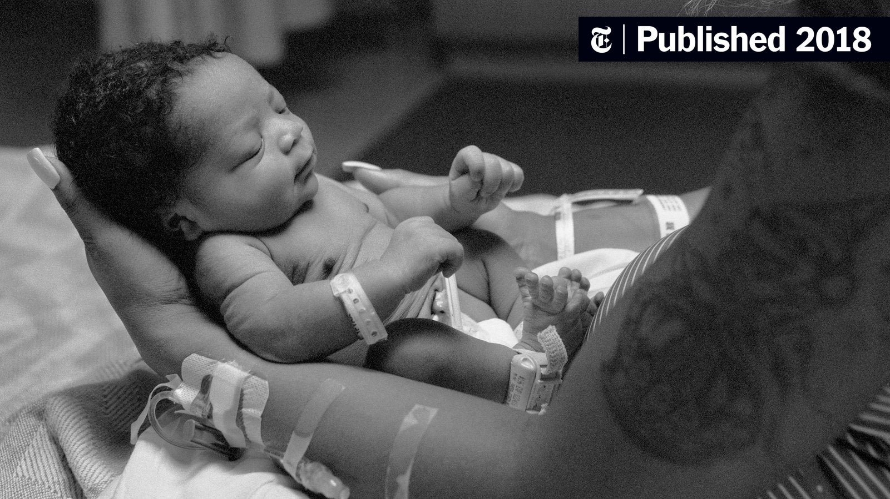

Save Black Mothers

Save Black Mothers

Save Black Mothers
What is preclampsia? Preclampsia is a complication of pregnancy. Preclampsia causes the causes the arteries not to be able to carry the blood effectively. This is then affects the placenta. If the placenta doesn't get the get enough blood the baby will receive inadequate blood and oxygen and fewer nutrients. Therefore this leads to slow birth and preterm birth.
What is postpartum hemorrhage? Postpartum Hemorrhage is when a woman experiences significant bleeding following childbirth. Uterine atony, characterized by inadequate contraction of the uterus, stands as the primary culprit behind postpartum hemorrhage. A history of postpartum hemorrhage in prior pregnancies poses a notable risk factor, prompting healthcare providers to diligently assess its severity and underlying cause.
What are blood clots?Blood clots is a conglomeration of platelets, proteins, and cells in the bloodstream that adhere together, forming a mass. Blood clots in pregnant women tend to form in the deep veins of the legs or in the pelvic area. This condition is known as deep vein thrombosis (DVT). Pulmonary embolism (PE) is a life-threatening event that occurs when a DVT breaks off and travels to the blood vessels of the lungs.